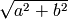

Summary¶
| Info | Prints the inputs |
| clock | None |
| constant | Creates a numerical constant that never changes. |
| gain | None |
| identity | This block outputs the inputs. This is an example |
| Prints the inputs | |
| rand | None |
Module procgraph.components.dynamic
Blocks performing operations with a dynamic nature.
| derivative | None |
| derivative2 | None |
| forward_difference | Computes x[t+1] - x[t-1] normalized with timestamp. |
| fps_data_limit | This block limits the output update to a certain framerate. |
| history | This block collects the history of a quantity, |
| historyt | This block collects the history of a quantity, |
| last_n_samples | This block collects the last n samples of a quantity, |
| sieve | This block only transmits every n steps. |
| sync | This block synchronizes a set of N sensor streams. |
| sync2 | This block synchronizes a set of N sensor streams. |
| two_step_difference | Computes x[t+1] - x[t] normalized with timestamp. |
| wait | This block waits a given number of updates before transmitting the |
Module procgraph.components.gui
Blocks using Matplotlib to display data.
| fps_limit | This block limits the output update to a certain framerate. |
| plot | Just plots the vector instantaneously |
Module procgraph.components.images
Blocks for basic operations on images.
| compose | Configuration: |
| gray2rgb | Converts a H x W grayscale into a H x W x 3 RGB by replicating channel. |
| grayscale | None |
| grid | A block that creates a larger image by arranging them in a grid. |
| posneg | Converts a 2D value to normalized uint8 RGB red=positive, blue=negative 0-255. |
| rgb2gray | None |
| scale | Provides a RGB representation of the values by interpolating the range |
Module procgraph.components.misc
Miscellaneous functions to be better organized.
| as_json | Converts the input into a JSON string. |
| pickle | Dumps the input as a pickle file. |
| to_file | Prints the input line by line to a given file. |
Module procgraph.components.numpy_ops
Various operations wrapping numpy functions.
| * | None |
| + | None |
| - | None |
| / | None |
| abs | absolute(x[, out]) |
| astype | None |
| dstack | None |
| gradient1d | None |
| hstack | None |
| long | log(x[, out]) |
| outer | None |
| select | None |
| sign | sign(x[, out]) |
| square | square(x[, out]) |
| take | None |
| vstack | None |
Module procgraph.components.robotics
Routines specific to robotics.
| pose2commands | None |
| pose2vel_ | None |
Module procgraph.components.signals
Simple routins for signals extraction, combination.
| extract | This block extracts some of the components |
| join | This block joins multiple signals into one. |
Module procgraph.components.statistics
Blocks for common statistical operations.
| cov2corr | Compute the correlation matrix from the covariance matrix. |
| covariance | None |
| expectation | None |
| normalize | None |
| soft_variance | Computes soft variance (expectation of error absolute value) |
| variance | Computes the variance |
Module procgraph.components.video
Blocks for encoding/decoding video based on MPlayer.
| SimpleCompression | None |
| mencoder | Encodes a video stream. |
| mplayer | Plays a video stream. |
Module procgraph.components¶
Block Info¶
Prints the inputs
Block clock¶
Block constant¶
Creates a numerical constant that never changes.
Example:
|constant value=42 name=meaning| -> ...
Two parameters:
- value, necessary
- name, optional signal name (default: const)
Block gain¶
Block identity¶
This block outputs the inputs. This is an example
of a block whose signal configuration is dynamics: init() gets called twice.
Block print¶
Prints the inputs
Block rand¶
Module procgraph.components.dynamic¶
Blocks performing operations with a dynamic nature.
This library contains blocks that perform operations with time. This library is autoloaded.
Block derivative¶
Block derivative2¶
Block forward_difference¶
Computes x[t+1] - x[t-1] normalized with timestamp.
Block fps_data_limit¶
This block limits the output update to a certain framerate.
Block history¶
This block collects the history of a quantity,
and outputs (x, t).
Arguments: - interval (seconds) interval to record
Output: - x - t
Block historyt¶
This block collects the history of a quantity,
and outputs (x, t).
Arguments: - interval (seconds) interval to record
Output: - a tuple (x,y)
Block last_n_samples¶
This block collects the last n samples of a quantity,
and outputs (x, timestamp).
Arguments: - n, number of samples
Output: - x - t
Block sieve¶
This block only transmits every n steps.
Config: - n
Input: variable Output: variable (same as input)
Block sync¶
This block synchronizes a set of N sensor streams.
The first signal is called the “master” signal. The other (N-1) are slaves.
We guarantee that: - if the slaves are faster than the master,
then we output exactly the same
Master * * * * * Slave ++++++++++++++++
Master * * * * * output? v v x v Slave + + + output? v v v
Block sync2¶
This block synchronizes a set of N sensor streams.
The first signal is called the “master” signal. The other (N-1) are slaves.
Block two_step_difference¶
Computes x[t+1] - x[t] normalized with timestamp.
Block wait¶
This block waits a given number of updates before transmitting the
output.
Config: - n (number of updates)
Input: variable Output: variable (same as input)
Module procgraph.components.gui¶
Blocks using Matplotlib to display data.
Block fps_limit¶
This block limits the output update to a certain framerate.
Note that this uses realtime wall clock time – not the data time! This is mean for real-time applications, such as visualization.
Block plot¶
Just plots the vector instantaneously
Module procgraph.components.images¶
Blocks for basic operations on images.
The module contains blocks that perform basic operations on images. The library is autoloaded and has no software dependency.
For more complex operations see also:
- module:procgraph.components.cv
- module:procgraph.components.pil
Example
Convert a RGB image to grayscale, and back to a RGB image::
|input| -> |rgb2gray| -> |gray2rgb| -> |output|
Block compose¶
Configuration:
width, height: dimension in pixels
positions: a structure giving the position of each signal in the canvas. Example:
compose.positions = {y: [0,0], ys: [320,20]}
Block gray2rgb¶
Converts a H x W grayscale into a H x W x 3 RGB by replicating channel.
Block grayscale¶
Block grid¶
A block that creates a larger image by arranging them in a grid.
Block posneg¶
Converts a 2D value to normalized uint8 RGB red=positive, blue=negative 0-255.
Block rgb2gray¶
Block scale¶
Provides a RGB representation of the values by interpolating the range
[min(value),max(value)] into the colorspace [min_color, max_color].
- Args:
value: a numpy array with finite values squeeze()able to (W,H). min_value: If specified, this is taken to be the threshold. Everything
below min_value is considered to be equal to min_value.
max_value: Optional upper threshold. min_color: color associated to minimum value. Default: [1,1,1] = white. max_color: color associated to maximum value. Default: [0,0,0] = black.
- Raises:
- ValueError: if min_value == max_value
Returns: a (W,H,3) numpy array with dtype uint8 representing a RGB image.
Module procgraph.components.misc¶
Miscellaneous functions to be better organized.
Block as_json¶
Converts the input into a JSON string.
Block pickle¶
Dumps the input as a pickle file.
Block to_file¶
Prints the input line by line to a given file.
Module procgraph.components.numpy_ops¶
Various operations wrapping numpy functions.
Block *¶
Block +¶
Block -¶
Block /¶
Parameters¶
- x : array_like
- Input array.
Returns¶
- res : ndarray
- An ndarray containing the absolute value of each element in x. For complex input, a + ib, the absolute value is .
Examples¶
>>> x = np.array([-1.2, 1.2])
>>> np.absolute(x)
array([ 1.2, 1.2])
>>> np.absolute(1.2 + 1j)
1.5620499351813308
Plot the function over [-10, 10]:
>>> import matplotlib.pyplot as plt
>>> x = np.linspace(-10, 10, 101)
>>> plt.plot(x, np.absolute(x))
>>> plt.show()
Plot the function over the complex plane:
>>> xx = x + 1j * x[:, np.newaxis]
>>> plt.imshow(np.abs(xx), extent=[-10, 10, -10, 10])
>>> plt.show()
Block astype¶
Block dstack¶
Block gradient1d¶
Block hstack¶
Block long¶
log(x[, out])
Natural logarithm, element-wise.
The natural logarithm log is the inverse of the exponential function, so that log(exp(x)) = x. The natural logarithm is logarithm in base e.
Parameters¶
- x : array_like
- Input value.
Returns¶
- y : ndarray
- The natural logarithm of x, element-wise.
See Also¶
log10, log2, log1p
Notes¶
Logarithm is a multivalued function: for each x there is an infinite number of z such that exp(z) = x. The convention is to return the z whose imaginary part lies in [-pi, pi].
For real-valued input data types, log always returns real output. For each value that cannot be expressed as a real number or infinity, it yields nan and sets the invalid floating point error flag.
For complex-valued input, log is a complex analytical function that has a branch cut [-inf, 0] and is continuous from above on it. log handles the floating-point negative zero as an infinitesimal negative number, conforming to the C99 standard.
References¶
| [1] | M. Abramowitz and I.A. Stegun, “Handbook of Mathematical Functions”, 10th printing, 1964, pp. 67. http://www.math.sfu.ca/~cbm/aands/ |
| [2] | Wikipedia, “Logarithm”. http://en.wikipedia.org/wiki/Logarithm |
Examples¶
>>> np.log([1, np.e, np.e**2, 0])
array([ 0., 1., 2., -Inf])
Block outer¶
Block select¶
Block sign¶
sign(x[, out])
Returns an element-wise indication of the sign of a number.
The sign function returns -1 if x < 0, 0 if x==0, 1 if x > 0.
Parameters¶
- x : array_like
- Input values.
Returns¶
- y : ndarray
- The sign of x.
Examples¶
>>> np.sign([-5., 4.5])
array([-1., 1.])
>>> np.sign(0)
0
Parameters¶
- x : array_like
- Input data.
Returns¶
- out : ndarray
- Element-wise x*x, of the same shape and dtype as x. Returns scalar if x is a scalar.
See Also¶
numpy.linalg.matrix_power sqrt power
Examples¶
>>> np.square([-1j, 1])
array([-1.-0.j, 1.+0.j])
Block take¶
Block vstack¶
Module procgraph.components.robotics¶
Routines specific to robotics.
Block pose2commands¶
Block pose2vel_¶
Module procgraph.components.signals¶
Simple routins for signals extraction, combination.
Block join¶
This block joins multiple signals into one.
Module procgraph.components.statistics¶
Blocks for common statistical operations.
Block cov2corr¶
Compute the correlation matrix from the covariance matrix.
If zero_diagonal = True, the diagonal is set to 0 instead of 1.
Block covariance¶
Block expectation¶
Block normalize¶
Block soft_variance¶
Computes soft variance (expectation of error absolute value)
Block variance¶
Computes the variance
Module procgraph.components.video¶
Blocks for encoding/decoding video based on MPlayer.
Block SimpleCompression¶
Block mencoder¶
Encodes a video stream.
Input: H x W x 3 uint8 numpy array representing RGB image. Config:
- file
- vcodec mpeg4
- vbitrate 1000000
Note that allowed codec and bitrate depend on your version of mencoder.